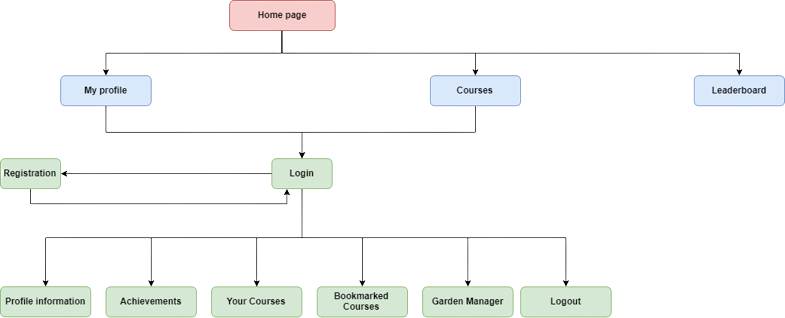
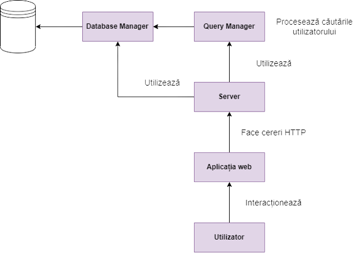

Autori
- Muntean Iulian (40%)
- Godovaniuc Victoria (30%)
- Popa Bianca (30%)
Cuprins
- Introducere
- Descriere Generală
- Cerințele externe pentru interfață
- Caracteristicile sistemului
- Alte cerințe nonfuncționale
- Structura proiectului
- Pașii de utilizare
- Arhitectura
1. Introducere
1.1 Scop
Acest document are ca scop enumerarea și analiza tuturor conceptelor necesare în vederea dezvoltării aplicației web "Gardening Tutor". De asemenea, acest document își propune conturarea unor idei care ar putea fi introduse în aplicație odată cu dezvoltarea acesteia.
1.2 Publicul țintă și sugestii pentru parcurgerea documentului
Proiectul prezentat în acest document are ca public țintă cadrele didactice ale Facultății de Informatică din cadrul Universității Alexandru Ioan Cuza, specializate în domeniul Tehnologii Web. Pentru o cât mai bună înțelegere a acestui document se recomandă parcurgerea în ordinea subunităților prezentate în cuprinsul de mai sus.
1.3 Scopul produsului
Scopul proiectului "Gardening Tutor" este acela de a pune la dispoziția tuturor celor pasionați de grădinărit o serie de cursuri, de diferite dificultăți și categorii, cu ajutorul cărora utilizatorii vor învăța pas cu pas modul în care se crește și îngrijește corect o anumită plantă. Aceștia vor primi indicații în legătură cu ustensilele necesare, timpul de parcurgere al cursului și sfaturi utile.
2. Descriere Generală
2.1 Perspectiva produsului
Aplicația web "Gardening Tutor" a fost aleasă dintr-o serie de aplicații propuse spre dezvoltare de către domnul profesor Matei Micu, având scop didactic și de dezvoltare. Această aplicație este constituită din trei componente: o pagină web principală ce poate fi vizualizată de către orice utilizator, o serie de pagini web disponibile numai clienților cu un cont creat și o bază de date pentru a stoca toate informațiile legate de utilizatori.
2.2 Funcțiile produsului
Interacțiunea utlizatorului cu aplicația poate consta în:
- Autentificare sau înregistrare
- Marcarea oricărui curs în secțiunea de favorite
- Parcurgerea unor cursuri și finalizarea acestora
- Adăugarea unor anumite plante și informații legate de acestea în tabelul din secțiunea de management a grădinii
- Vizualizarea realizărilor utilizatorului și a topului celor mai sârguincioși utilizatori
2.3 Clasele și caracteristicile utlizatorului
Cele două categorii de utilizatori care vor interacționa cu aplicația se diferențiază prin serviciile la care aceștia au acces.
Prima categorie reprezintă vizitatorul. Acesta poate vizualiza detaliile legate de aplicație și contact pe pagina principală, categoriile de cursuri și dificultățile acestora, precum și clasamentul utilizatorilor cei mai activi.
A doua categorie reprezintă utilizatorul activ, ce și-a creat un cont și are acces la conținutul cursurilor și posibilitatea de a le parcurge, evoluția sa, informațiile profilului său și pagina dedicată managementului grădinii.
2.4 Mediul de operare
Aplicația va putea fi rulată de pe mai multe platforme. Componentele vor fi scrise și proiectate în HTML, Java Script și CSS pentru styling și vom folosi Node JS pentru serverul web. Pentru baza de date se va utiliza MySQL.
2.5 Constrângeri ale designului și ale implementării
Proiectul prezintă o gamă largă de constrângeri. Având scop didactic, acesta se axează pe folosirea tehnologiilor web clasice, fiind interzisă utilizarea framework-urilor.
Din punct de vedere al designului, aplicația trebuie să fie cât mai intuitivă și ușor de utilizat de către orice tip de utilizator, indiferent de cunoștințele în tehnologie ale acestuia.
2.6 Documentația pentru utilizator
Deoarece aplicația este realizată cu scopul de a fi ușor de utilizat și intuitivă, documentația de față este suficientă pentru înțelegerea de către utilizator a funcționalităților și folosirea acesteia.
2.7 Premise și dependențe
Proiectul prezintă dependențe față de factori externi, de exemplu alte componente software. Aplicația oferă la dispoziție un mediu de gestionare al plantelor.
3. Cerințele externe pentru interfață
3.1 Interfețe de utilizator
Pentru a putea beneficia de cele 2 servicii ale produsului "Web Gardening Tutor": Garden Manager și Courses, în primul rând, utilizatorul trebuie să-și creeze un cont nou dacă nu are unul deja și apoi să se autentifice, sau să meargă direct pe autentificare pentru cont deja existent. Pentru înregistrare vor fi solicitate următoarele informații: numele, adresa de e-mail, parola și confirmarea acesteia, iar pentru autentificare doar adresa de e-mail și parola.
După autentificare utlizatorul va vedea pagina profilului său cu următoarele secțiuni: Profile information, Achievements, Your courses, Bookmarked Courses și Garden Manager. De asemenea, precum oricărui utilizator neautentificat îi va fi permisă accesarea paginilor din meniul principal: Profile, Courses și Leaderboard. La accesarea paginii Courses pe lângă vizualizarea cursurilor existente vor putea fi accesate și paginile fiecărui curs în parte unde va învăța într-un mod cât mai interactiv și captivant bazele grădinăritului. Atunci când va fi accesată pagina Garden Manager utilizatorul va avea un tabel pentru managementul plantelor din grădina sa, unde va putea să planteze și mai apoi să facă update-uri la statutul acestora. Mai mult decât atât, în cadrul serviciului Garden Manager utilizatorul va putea primi reminder pe e-mailul pe care l-a folosit la înregistrare cu o zi sau două înainte de deadline pentru a avea grijă la timp de plantele din grădina sa.
Utilizatorii neautentificați atunci când vor intra în Profile vor avea un formular de autentificare sau vor putea accesa un formular de înregistrare și apoi să se autentifice. Atunci când vor accesa Courses vor putea vedea doar pagina cu toate cursurile existente pe platformă și nivelul de dificultate al acestora, iar când va fi accesată pagina Leaderboard vor putea vedea clasamentul Top 10 pentru cei mai sârguincioși utilizatori.
3.2 Interfețe hardware
Interfața aplicației a fost creată astfel încât să fie compatibilă cu cele mai utilizate dispozitive (telefon mobil, tabletă, PC etc.). Având în vedere funcționalitățile simple ale aplicației, se estimează un cost minim al necesităților tehnice și de asemenea a unei capacități reduse necesare pentru back-end. Protocolul de comunicare client-server și server-server (pentru comunicare internă între componente) va fi TCP.
3.3 Interfețe software
Aplicația interacționează cu alte elemente software externe, cum ar fi: browser-ul și sistem de mailing.
3.4 Interfețe de comunicare
Comunicarea dintre front-end si back-end se bazează pe protocolul HTTP. Request-urile pentru baza de date se vor realiza cu ajutorul unor interogări SQL. Deși, pentru securitatea datelor este necesară utilizarea protocolului HTTPS, nu îl putem utiliza din cauza costurilor ridicate pentru că proiectul este unul realizat doar în scop didactic.
4. Caracteristicile sistemului
4.1 Înregistrare
Descriere și prioritate
Pentru a putea accesa conținutul unui curs și pentru a beneficia de monitorizarea progresului, respectiv de posibilitatea de a salva cursuri, utilizatorii aplicației sunt nevoiți să-și creeze mai întâi un cont.
Informațiile necesare creării contului vor fi un nume, un e-mail valid și o parolă care să respecte anumite condiții de siguranță.
Prioritatea acestei componente este ridicată deoarece, pentru ca un utilizator să se poată bucura pe deplin de funcționalitățile aplicației, acesta trebuia să dețină un cont.
Secvențe de stimul/răspuns
Pașii pe care un utilizator trebuie să îi urmeze pentru a-și crea un cont sunt următorii:
- introducerea numelui în câmpul corespunzător;
- introducerea unei adrese de e-mail valide în câmpul corespunzător;
- introducerea unei parole care să respecte anumite cerințe;
utilizatorul va fi informat în timp real, care din aceste cerințe sunt îndeplinite de textul introdus în câmpul aferent parolei; - reintroducerea parolei (exact aceeași) din câmpul precedent;
- apăsarea butonului "Sign Up", aflat sub câmpurile de completat.
După apăsarea butonului "Sign up", dacă unul dintre câmpuri nu a fost completat sau dacă nu a fost completat corect, atunci contul nu va fi creat, iar utilizatorului i se va atrage atenția asupra câmpului care nu a fost completat/ nu a fost completat corect. Dacă înregistrarea a fost făcută cu succes, atunci utilizatorul va primi un mesaj prin care va fi informat ca i-a fost transmis un e-mail pentru confirmarea identității.
Cerințe funcționale
Pentru a putea fi creat contul, fiecare câmp trebuie completat, iar următoarele câmpuri trebuie să aibă și un conținut valid:
- email-ul trebuie să fie unul valid
- parola trebuie să respecte următoarele cerințe: să conțină cel puțin 8 caractere, să conțină cel puțin o literă mică, o literă mare, respectiv o cifră
- textul introdus în câmpul pentru confirmarea parolei trebuie să coincidă cu textul din câmpul corespunzător parolei
4.2 Autentificare
Descriere și prioritate
Rolul acestei componente este același ca cel al componentei de înregistrare. Singura diferență este că autentificarea completează înregistrarea:
nu este suficient ca un utilizator să aibă cont în aplicație, acesta trebuie să se și autentifice cu acest cont, pentru a putea beneficia de funcționalitățile aplicației.
Prioritatea este ridicată.
Secvențe de stimul/răspuns
Pașii pe care un utilizator trebuie să îi urmeze pentru a se autentifica sunt următorii:
- introducerea adresei de e-mail pe care a folosit-o la crearea contului;
- introducerea parolei pe care a setat-o la crearea contului;
- apăsarea butonului "Log In";
Cerințe funcționale
Pentru a se putea realiza autentificarea, combinația dintre e-mail și parolă trebuie să fie una corectă - să fi fost folosită la crearea unui cont.
4.3 Parcurgere Curs
Descriere și prioritate
Această componentă constituie nucleul produsului, fiind cea care oferă utilizatorului cele mai importante motive ca să folosească această aplicație.
Secvențe de stimul/răspuns
Pașii pe care un utilizator trebuie să îi urmeze pentru a parcurge un curs sunt următorii:
- accesarea paginii "Courses" prin apăsarea butonului cu același nume aflat în bara de navigare pusă la dispoziție în fiecare pagină a aplicației; sau accesarea secțiunii "My Courses" din interiorul paginii "Profile"
- selectarea cursului dorit, prin apăsarea butonului "Get Started"/"Continue" din cadrul cardului unui curs
- bifarea pe rând a etapelor necesare ducerii la bun sfârșit a cursului
- apăsarea butonului "Done" de la finalul cursului
Cerințe funcționale
Utilizatorul va trebui să bifeze pe rând etapele din interiorul cursului, în ordinea în care apar (de sus în jos). Încercarea de bifare a unei etape nu va avea succes dacă toate etapele premergătoare nu au fost deja bifate. Pentru a avea efect apăsarea butonului "Done", utilizatorul trebuie mai întâi să bifeze toate etapele cursului, respectând cerințele prezentate mai sus.
4.4 Vizualizare informații despre propriul profil
Descriere și prioritate
Utilizatorii care și-au creat un cont în această aplicație pot verifica anumite informații despre propriul profil, cum ar fi: informații generale, realizări, cursurile pe care le urmează, cursurile salvate.
Secvențe de stimul/răspuns
Pașii pe care un utiliztor trebuie să îi urmeze pentru a vizualiza informațiile despre propriul profil sunt următorii:
- accesarea paginii "Profile" prin apăsarea butonului cu același nume aflat în bara de navigare puăa la dispoziție în fiecare pagină a aplicației
- accesarea unei secțiuni specifice de informații prin apăsarea unui buton din meniul aflat în această pagină
4.5 Managementul plantelor din propria gradină
Descriere
Utilizatorii au posibilitatea de a-și monitoriza fiecare plantă, introducând-o, apoi modificând-o în formularul aflat pe pagina "Garden Manager". De asemenea, aceștia pot șterge o plantă din tabel în cazul în care nu mai doresc monitorizarea acesteia.
Secvențe de stimul/răspuns
Pașii pe care un utilizator trebuie să îi urmeze pentru a introduce o plantă în tabelul de monitorizare sunt următorii:
- introducerea unui nume pentru planta ce se dorește a fi monitorizată
- introducerea datei calenderistice la care a avut loc ultima interacțiune cu planta
- introducerea datei calendaristice la care utilizatorul trebuie să desfășoare următoarea activitate
- selectarea stadiului în care se află obiectul ce se dorește a fi monitorizat
- selectarea următoarei interacțiuni pe care trebuie să o aibă utilizatorul cu planta
- apăsarea butonului "Add New Plant"
Cerințe funcționale
Pentru a putea adăuga o plantă în tabelul de monitorizare, toate câmpurile de mai sus trebuie să fie completate. Data până la care trebuie să aibă loc următoarea interacțiune cu planta, nu trebuie să fie cronologic înaintea datei ultimei interacțiuni.
4.6 Vizualizarea clasamentului
Descriere
Aplicația pune la dispoziția tuturor utilizatorilor (nu doar celor care au un cont) să vizualizeze un clasamnet creat pe baza numărului și dificultății cursurilor terminate.
Secvențe de stimul/răspuns
Pentru a putea vizualiza clasamentul, singurul lucru pe care trebuie sa îl facă un utilizator este să aceseze pagina "Leaderboard" apăsând butonul cu același nume din bara de navigare.
5. Alte cerințe nonfuncționale
5.1 Cerințe de performanță
- Normalizarea bazei de date
5.2 Cerințe de siguranță
După ce utilizatorul a introdus date valide în formularul de înregistrare acesta va primi pe adresa de e-mail specificată un mail de confirmare a identității.
5.3 Cerințe de securitate
Parola introdusă de utilizator va fi trimisă către back-end și menținută în baza de date într-un format criptat.
5.4 Cerințe de calitate software
- Portability: aplicația va putea fi folosită pe mai multe tipuri de dispozitive
- Corectness: informațiile regăsite în cursuri sunt corecte
- Usability: ușurința în navigarea între paginilie aplicației și un comportament predictibil
5.5 Reguli de business
Un utilizator fără cont are acces doar la home page, lista de cursuri și clasament.
Pentru a putea beneficia de funcționalitățile aplicației: parcurgerea de cursuri și managemntul grădinii, un utilizator trebuie mai întâi să-și creeze un cont.
6. Structura proiectului
- controllers
- models
- node_modules
- public
- database
- diagrams
- fonts
- images
- jsons
- scripts
- styles
- course_template.html
- courses.html
- documentatie.html
- gardenmanager.html
- home.html
- leaderboard.html
- login.html
- profile.html
- register.html
- views
- database.js
- server.js
7. Pașii de utilizare
Link pentru flow-ul aplicației elaborat în Figma8. Arhitectura
8.1 Diagrama de structură
8.2 Arhitectura aplicației
8.3 Diagrama bazei de date